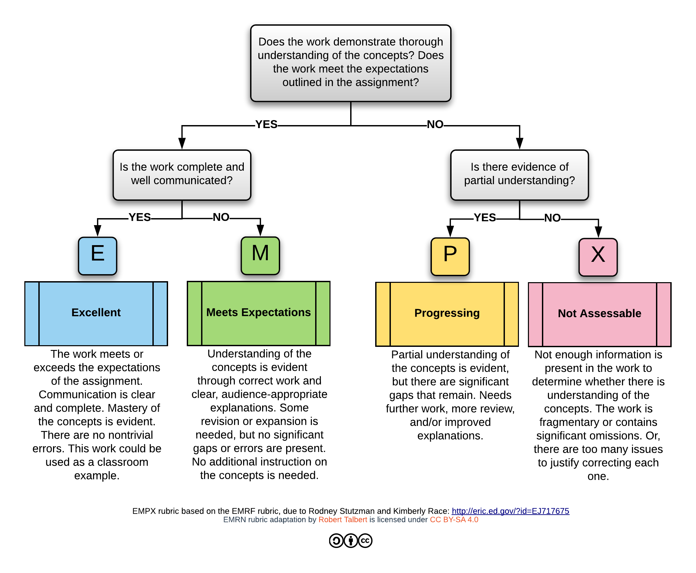

CIS 351 Computer Organization and Assembly Language
Fall 2021
- Contact Information:
-
Instructor: Zachary Kurmas Office: MAK C-2-316 Phone: 331-8688 Office Hours: MF 9-10; MW 3-4 Home page: http://www.cis.gvsu.edu/~kurmasz - Course Objectives:
- At the completion of the course, students will be able to
- construct simple combinatorial and sequential circuits,
- trace the execution of an instruction in a simple CPU,
- compare and contrast a pipelined CPU design with a single-cycle CPU design,
- explain the benefits of the memory hierarchy,
- explain how a particular cache configuration determines whether a memory access is a hit or a miss,
- write code in assembly language using standard programming constructs.
- Instruction Format
- This course will meet face-to-face as scheduled for lecture and lab. Attendance is required. Many lectures may be "flipped", which means you will be expected to have watched the assigned video content before attending lecture.
- Text:
-
- Digital Design and Computer Architecture (2nd edition) by David Money Harris and Sarah L. Harris. ISBN: 9780123944245
- Pre-Requsites
- MTH 225, CIS 241, and CIS major/minor standing. In addition, students are expected to be comfortable programming in Java and using
git. - Important Dates:
-
- Drop Day: Friday, 29 October
- Final Exam: Monday, 13 December, 8:00 a.m. or Wednesday, 15 December, 4:00 p.m.
- Course Policies:
-
- Labs are due at the beginning of class on the following Monday.
- Assignments are due at the beginning of class on the due date, unless specified otherwise.
- The penalty for submitting assignments late varies by assignment. It could be as little as one or two points, or as much as no credit for the assignment. However, assignments more than 14 days late may receive a 0 even if "I just forgot to turn it in."
- Unless specified otherwise, all assignments are to be completed individually.
- I do not re-schedule labs, exams, or quizzes except in cases of extreme emergencies. Business trips are not emergencies.
- The deadline to drop with a "W" is Friday, 29 October. Remember, I cannot and will not drop this class for you.
- Attendance is required. I understand that absences are occasionally necessary; however, I reserve the right to lower grades for excessive absences.
-
This course is subject to the GVSU policies listed at
http://www.gvsu.edu/coursepolicies/as well as standard university COVID policies.
- Special Assistance:
- If there is any student in this class who has special needs because of learning, physical or other disability, please contact me and Disability Support Services (DSS) at 616.331.2490. Furthermore, if you have a disability and think you will need assistance evacuating this classroom and/or building in an emergency situation, please make me aware so I can develop a plan to assist you.
- Grading:
- Your grade in this course will be specifications-based rather than points-based. The reqirements for each
base grade in this course (A, B, C, D, or F without plus/minus modifiers) is given in the table below:
Category D C B A Core Objectives Mastered: 17/19 Mastered: 17/19 Mastered: 18/19 Mastered: 18/19 Progressing: 19/19 Progressing: 19/19 All Objectives Mastered: 17/34 Mastered: 23/34 Mastered: 25/34 Mastered: 30/34 Progressing: 22/34 Progressing: 25/34 Progressing: 30/34 Progressing: 34/34 Projects Passed the build: 3/4 Passed the build: 4/4 Passed the build: 4/4 Passed the build: 4/4 Significant progress: 4/4 Late days: ≤ 24 Late days: ≤ 16 Late days: ≤ 8 Presentation ≥ M: 1/4 Presentation ≥ M: 2/4 Presentation ≥ M: 3/4 Presentation ≥ M: 4/4 Presentation ≥ P 4/4 Presentation ≥ P 4/4 Presentation ≥ P 4/4 Labs M or better: 8/11 M or better: 8/11 M or better: 9/11 M or better: 11/11 R or better: 9/11 R or better: 9/11 R or better: 11/11 Present and on task: 7/11 Present and on task: 8/11 Present and on task: 8/11 Present and on task: 9/11 Homework Complete / thoughtful: 3/5 Complete / thoughtful: 3/5 Complete / thoughtful: 3/5 Complete / thoughtful: 3/5 +/- modifiers: There will be a comprehensive final exam. If you score 80% or higher on this exam, you will earn a "+" on your base grade. If you score 60% or lower, you will earn a "-". The final exam has no other effect on your course grade. I may add a plus or minus to a course grade for other reasons at my discretion. For example, i reserve the right to add a "-" to your grade for excessive absences. Note: GVSU does not award grades of A+ or D-.
Learning Objectives: Learning Objectives are skills that students are expected to aquire by the end of the course. Most learning objectives will be assessed using test/quiz questions; a few will be assessed as part of a lab, project, or homework. Learning objectives will be scored with either "M" for "Master" or "P" for "Progressing". Students earn an “M” when they have clearly demonstrated a thorough understanding of the learning objective (e.g., answer the related test questions without any mistakes --- or perhaps a very trivial mistake like a math error). Students earn "P" if their work indicates that they have a partial, but useful understanding of the topic (e.g., their answer is structured correctly, correctly applies the fundamentals, but has missing or incorrect details).
Core Learning Objectives: Several learning targets are classified as "Core" learning objectives. These represent the course's most important, fundamental concepts. Students must master these concepts to pass the course.
EMPX: Most submissions (other than test/quiz questions and homework) will be scored using the EMPX metric. (See the diagram below.) A mark of "E" or "M" indicates that the submission is complete and clearly demonstrates that the student understands the relevant concepts. A mark of "P" indicates that the student is making progress, but the assignment require additional work/revision. A mark of "X" not sufficiently complete to assess.
Projects: There are three main aspects to project submissions: (1) They must pass the instructor-written automated tests. (2) They must contain any reqired analysis (e.g., number of gates / running time). (3) The circuits and other source matrial must be neatly orginzed and commented. Projects are not evaluated until they pass the automated tests. Once a student's project passes the automated tests, the instructior will score the presentation and analysis using the EMPX rubric. Late days will accumulate until the project passes the automated tests and earns a mark of "E" or "M".
Labs: Students are expected to be both present and on-task during the scheduled lab sessions. (In other words, it is not acceptable to come in and work on other assignments.) Labs will be scored using the EMPX metric. Students are expected to revise their lab submissions until they earn a mark of "E" or "M". Labs are due at the beginning of lecture on the Monday following lab. Students get a total of four "late tokens" per semester. After those tokens have been exhaused, late lab submissions will not be accepted. Students are expected to revise any submissions that receive a score of "P" or "X". Those revisions are due two days after the instructor returns the labs.
Homework: Homework is practice. As such, it is expected to represent a "best effort" (i.e., be complete and thoughtful). We will work through homework problems, and solutions will be posted within a day or two of the due date. Therefore, students are not expected to revise and re-submit homework. However, if a student chooses to revise any homework exercises, I will be happy to review the submission and make suggestions.

Updated Friday, 10 December 2021, 2:45 PM